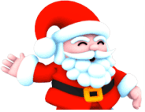
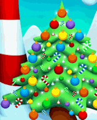

5 |
Introducción |
 |
|
No
hay razón para que Papá Noel haga todo el trabajo en Navidad,
¿no te parece?
Hoy Papá Noel se va a divertir un poco... ¡y quiere que lo acompañes!
Mientras Papá Noel apila los regalos con sus poderes mágicos, tu trabajo consiste en sacarlos de la pila y decorar el árbol de Navidad.
Instrucciones: Para seleccionar un adorno, ubica el puntero sobre él y pulsa el botón A.
Cambio de jugador: Puedes crear un jugador nuevo o dejar jugar a otra persona.
Comienzo del juego: Selecciona “play” para comenzar a ayudar a Papá Noel o para seguir jugando a partir de donde dejaste el juego la última vez.
Puntajes: Haz clic en “score” para ver quién tiene el mayor puntaje y llegó al nivel más alto. Papá Noel sabe quién es el mejor.
Opciones: Las opciones te permiten ajustar el volumen de la música y los efectos de sonido.
Cómo se juega: Puedes aprender a jugar Christmas Clix con la ayuda de imágenes. A veces, una imagen dice más que mil palabras.
Minijuegos: Puedes volver a jugar cualquier minijuego que hayas desbloqueado. ¿Podrás superar tu puntaje más alto?
Créditos: Entérate de quiénes son las personas que disfrutaron de ayudar a Papá Noel a crear Christmas Clix para ti.
|

 |
 |
 |